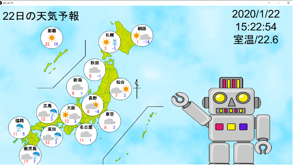

天気予報シミュレーション

天気予報の模倣。P演習Ⅱで制作した作品。
画面右側には現在の日付と、Arudinoの温度センサで取得した現在の室温を表示する。
画面左側は全国14ヶ所の地域の今日の天気と最高気温、最低気温を表示する。
ウェザーハックスというWebAPIのサービスを利用して、各地の今日の天気予報の情報を取得し、実際のニュースのように表示する。
また、各地の天気が表示されているところはボタンとなっていて、クリックするとロボットが現れ、その箇所の天気予報を読み上げる。

実行画面
担当
使用する音声の作成。空みたいな動く背景の実装。
ちょっとひとこと
ロボットの声は僕の声を加工したもの。
Copyright © by Kissyossy 2021